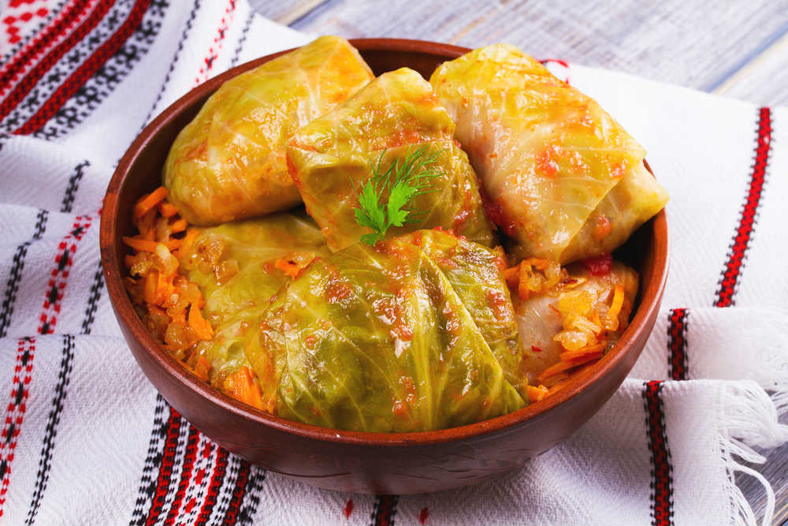

Sarma Recipe

Description
For this satisfying dish, cabbage leaves are stuffed with a seasoned mixture of rice, ground beef, pork and ham.
They are then laid on a bed of sauerkraut and simmered to completion.
This is the best stuffed cabbage recipe I've ever tried.
Ingredients:
- 1 large head cabbage
- 1 pound lean ground beef
- 1/2 pound ground pork
- 1/2 pound ground ham
- 1 cup uncooked long-grain white rice
- 1 onion, finely chopped
- 1 egg
- 1/2 teaspoon garlic powder
- 1 teaspoon salt
- 1 teaspoon coarse ground black pepper
- 1 pound sauerkraut
- 1 cup tomato juice
- water to cover
Directions:
- Place cabbage in the freezer for a few days. The night before making the rolls, take it out to thaw.
- In a large bowl, combine the beef, pork, ham, rice, onion, egg, garlic powder, salt and pepper.
Mix well. Form meat mixture into oblong balls, using 1/2 cup of the mixture at a time. Then, wrap a cabbage
leaf around each ball.
- Spread the sauerkraut in the bottom of a large pot, then layer cabbage rolls on top, pacing them
seam-side down. Pour tomato juice over rolls, then add enough water to cover. Bring to a boil, then reduce
heat to low and simmer for about 3 hours, addng more water as necessary.